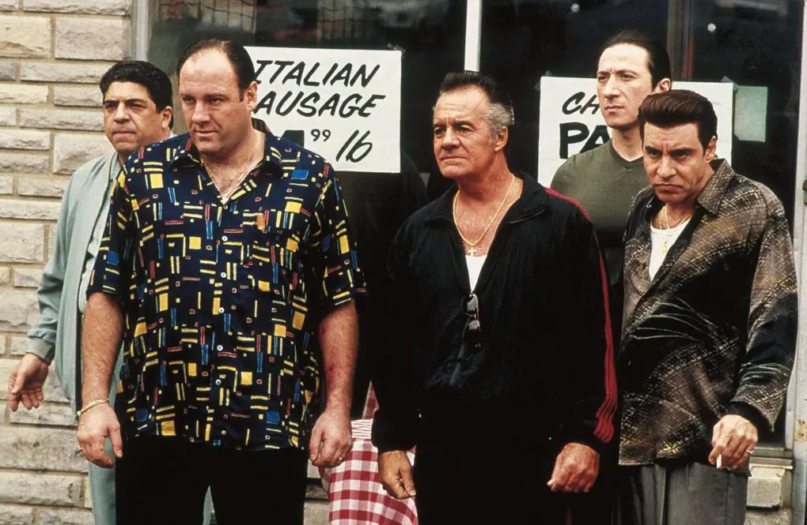
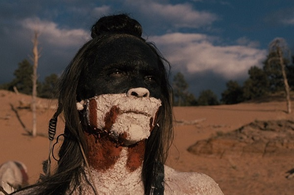
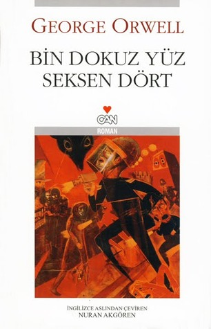
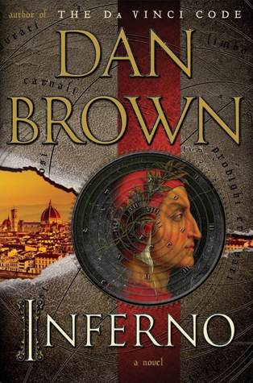

Uğurcan Kurt
Hakkımda
Merhaba.
Ben Uğurcan Kurt.
27 Kasım 1999 doğumluyum.
Kocaeli ilinde yaşıyorum.
Film, dizi izlemekten hoşlanırım.
Lorema.
En Beğendiğim Diziler
- The Sopranos

- Westworld

En Beğendiğim Kitaplar
- Bin Dokuz Yüz Seksen Dört

- Cehennem
